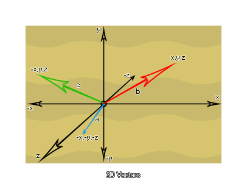

Irgendwann, wenn Sie ein Spiel von beliebiger Komplexität erstellen, werden Sie wahrscheinlich mit Vektoren zu tun haben. Sie werden in der Physik, in AI, in Trigonometrie und vielen anderen Situationen verwendet, aber was ist ein Vektor? Nun, um es einfach auszudrücken, ein Vektor ist eine gerichtete Menge. Beginnen wir mit einem 1-dimensionalen Vektor, der genau wie eine einzelne Zahl ist, indem wir eine nummerierte Linie mit einem Pfeil zeichnen, der bei Null beginnt und bei 5 endet. Dies ist der Vektor a, der gleich 5 ist und wenn wir zeichnen ein weiterer Pfeil, der bei 5 beginnt und bei 8 endet, haben wir Vektor b, der gleich 3 ist. 
Sie sollten erkennen, dass es egal ist, wo ein Vektor startet, alles, was zählt, ist wie lang es ist und in welche Richtung es geht. Also beginnt Vektor b bei 5, ist 3 Einheiten lang und zeigt auf "rechts", macht es identisch mit einem Vektor, der bei 0 beginnt und zu 3 geht. Nun können Sie diese Vektoren auch addieren, indem Sie die beiden Vektoren a und b Ende an Ende setzen, um den Vektor c zu erhalten, der gleich 8 ist. Was ist mit negativen Zahlen? Nun, wenn in dem obigen Bild ein Vektor, der auf "rechts" zeigt, einer positiven Zahl entspricht, können Sie sehen, dass ein Vektor, der auf "links" zeigt, einer negativen Zahl entspricht, was einen eindimensionalen Vektor zu nichts macht mehr als eine signierte (+/-) Nummer. Dies erklärt das wesentliche Konzept eines Vektors: Nur Länge und Richtung (in diesem Fall "links" oder "rechts") zählen, nicht die Position.
Also, was ist mit zweidimensionalen Vektoren? Nun, wir können uns vorstellen, dass sie nicht nur aus "links" und "rechts", sondern auch aus "oben" und "unten" bestehen: 
Das sind jetzt noch keine Vektoren, da wir sie immer noch mit ihren Start- und Endkoordinaten reduzieren müssen. Wenn wir den Vektor a betrachten, sehen wir, dass er eine Anfangskoordinate von [2,2] und eine Endkoordinate von [4,3] hat. Um den Vektor daraus zu erhalten, müssen wir ihn reduzieren, indem wir die Endkoordinaten vom Anfang abziehen Koordinaten wie folgt: [(x2-x1), (y2-y1)] = [(4-2), (3-2)] = [2,1]. Machen wir dasselbe für Vektor b jetzt: [(-1.2 - (- 3.2)), (2.1 - 1.1)] = [2, 1]. Merken Sie etwas? Diese beiden Vektoren sind gleich! Dies ist eine weitere Demonstration, dass ein Vektor keine Position hat, nur Richtung und Länge, und wir können diese Vektoren relativ zueinander um eine lokale [0,0] -Achse zeichnen: 
Dies bedeutet, dass ein 2D-Vektor durch zwei Werte definiert wird, eine x- und eine y- Position relativ zur lokalen [0,0] -Achse. Und was ist mit 3D-Vektoren? Nun, sie haben die hinzugefügte Dimension der "Tiefe", mit der sie zu kämpfen haben, und würden als Positionen x, y und z um eine lokale Achse wie folgt berechnet: 